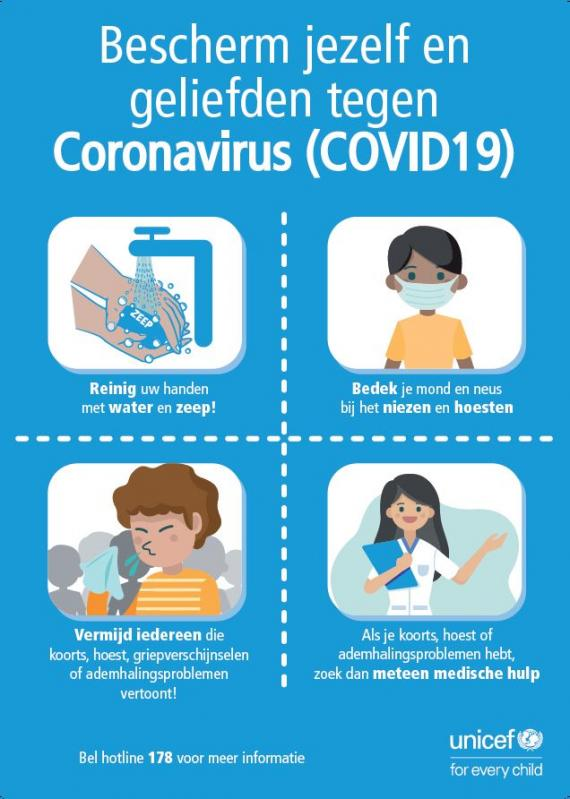
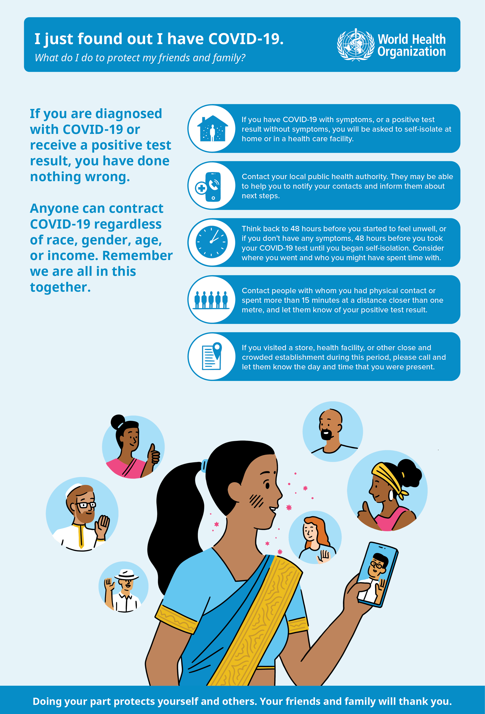
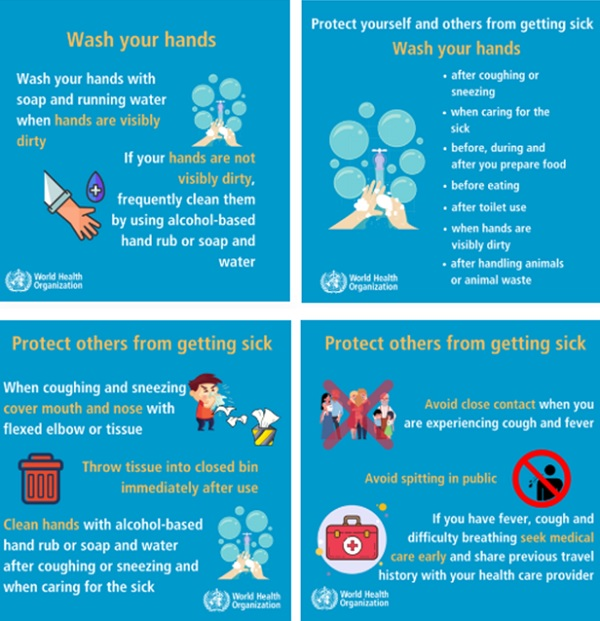
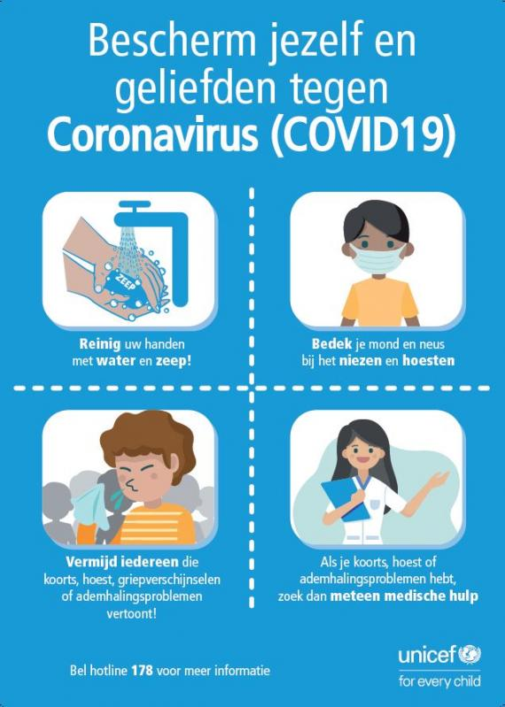
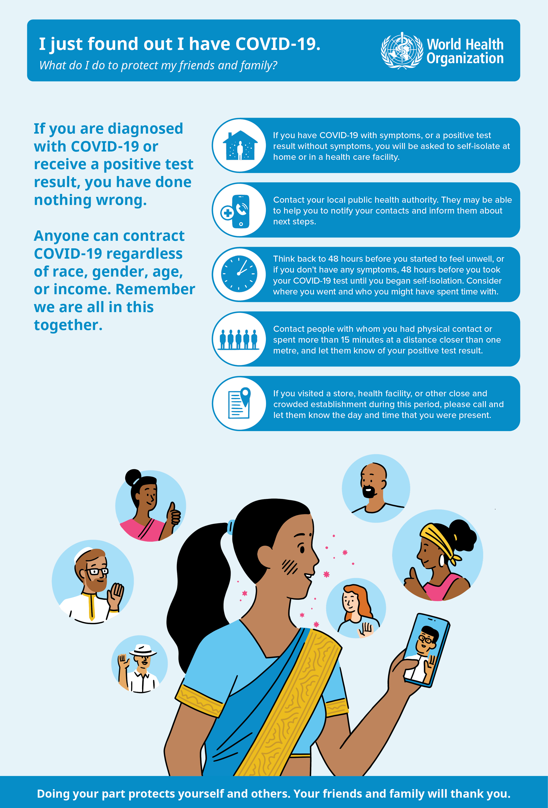
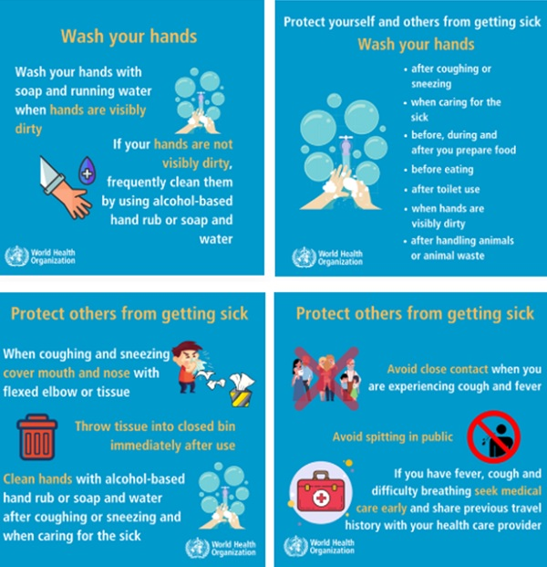

coronaviruses are a type of virus. There are many different kinds, and some cause disease.
A coronavirus
identified in 2019, SARS-CoV-2, has caused a pandemic of respiratory illness, called COVID-19.
How does the coronavirus spread?
As of now, researchers know that the coronavirus is spread through droplets and virus particles released
into the air when an infected person breathes, talks, laughs, sings, coughs or sneezes. Larger droplets may
fall to the ground in a few seconds, but tiny infectious particles can linger in the air and accumulate in
indoor places, especially where many people are gathered and there is poor ventilation. This is why
mask-wearing, hand hygiene and physical distancing are essential to preventing COVID-19.
How did the coronavirus start?
The first case of COVID-19 was reported Dec. 1, 2019, and the cause was a then-new coronavirus later named
SARS-CoV-2. SARS-CoV-2 may have originated in an animal and changed (mutated) so it could cause illness in
humans. In the past, several infectious disease outbreaks have been traced to viruses originating in birds,
pigs, bats and other animals that mutated to become dangerous to humans. Research continues, and more study
may reveal how and why the coronavirus evolved to cause pandemic disease.
How is COVID-19 treated?
Treatment for COVID-19 addresses the signs and symptoms of the infection and supports people with more
severe disease. For mild cases of coronavirus disease, your doctor may recommend measures such as fever
reducers or over-the-counter medications. More severe cases may require hospital care, where a patient may
receive a combination of treatments that could include steroids, oxygen, mechanical breathing support and
other COVID-19 treatments in development. Infusions of monoclonal antibodies given to certain patients early
in the infection may reduce the symptoms, severity and duration of the illness.
What are symptoms of coronavirus?
COVID-19 symptoms include:
Cough
Fever or chills
Shortness of breath or difficulty breathing
Muscle or body aches
Sore throat
New loss of taste or smell
Diarrhea
Headache
New fatigue
Nausea or vomiting
Congestion or runny nose
What do I do if I Feel Sick?
How do you protect yourself from this coronavirus?
Vaccines are now authorized to prevent infection with SARS-CoV-2, the coronavirus that causes COVID-19. But
until more is understood about how the vaccines affect a person’s ability to transmit the virus, precautions
such as mask-wearing, physical distancing and hand hygiene should continue regardless of a person’s
vaccination status to help prevent the spread of COVID-19. Learn more about the COVID-19 vaccine and ways to
protect yourself.
 




